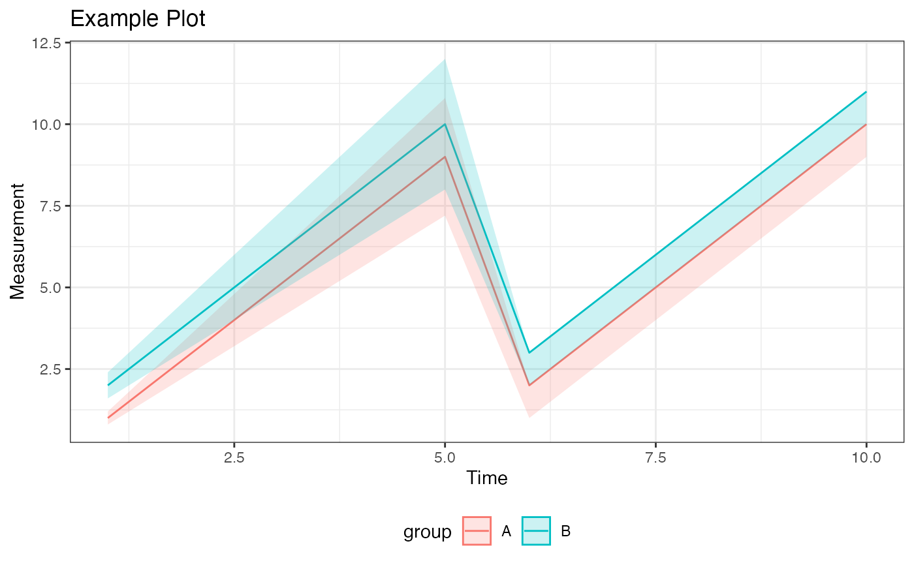

Creates customizable visualizations using ggplot2 for longitudinal data.
Supports dynamic axis scaling, optional grouping, faceting, and error visualization
with ribbons or error bars.
Usage
generate_plot(
stats,
x_var,
y_var,
group_var = NULL,
error_type = "bar",
xlab = NULL,
ylab = NULL,
title = NULL,
subtitle = NULL,
caption = NULL,
facet = NULL,
color_palette = NULL,
reference_lines = NULL,
show_sample_sizes = FALSE,
statistical_annotations = FALSE
)Arguments
- stats
A data frame containing the data to be plotted. Must include the columns specified in
x_var,y_var, and optionallygroup_var,bound_lower, andbound_upperfor error visualization.- x_var
A string specifying the column name for the x-axis variable.
- y_var
A string specifying the column name for the y-axis variable.
- group_var
A string specifying the column name for the grouping variable.
- error_type
A string specifying the error type. Use
"bar"for error bars or"band"for ribbons.- xlab
A string for the x-axis label.
- ylab
A string for the y-axis label.
- title
A string for the plot title.
- subtitle
A string for the plot subtitle.
- caption
A string for the plot caption.
- facet
A list specifying faceting variables. Use
facet_xfor columns andfacet_yfor rows. Both are optional.- color_palette
Optional vector of colors to use. If NULL, default ggplot colors are used.
- reference_lines
List of reference line specifications. Each element should be a list with components: value, axis ("x" or "y"), color, linetype, size.
- show_sample_sizes
Logical. If TRUE, adds sample size annotations.
- statistical_annotations
Logical. If TRUE, adds p-values and significance.
Examples
library(ggplot2)
data <- data.frame(
x = rep(1:10, each = 2),
mean_value = c(1:10, 2:11),
group = rep(c("A", "B"), 10),
bound_lower = c(0.8 * (1:10), 1:10),
bound_upper = c(1.2 * (1:10), 2:11),
is_continuous = TRUE
)
# Create a plot with error bands
plot <- generate_plot(
stats = data,
x_var = "x",
y_var = "mean_value",
group_var = "group",
error_type = "band",
xlab = "Time",
ylab = "Measurement",
title = "Example Plot"
)
print(plot)
